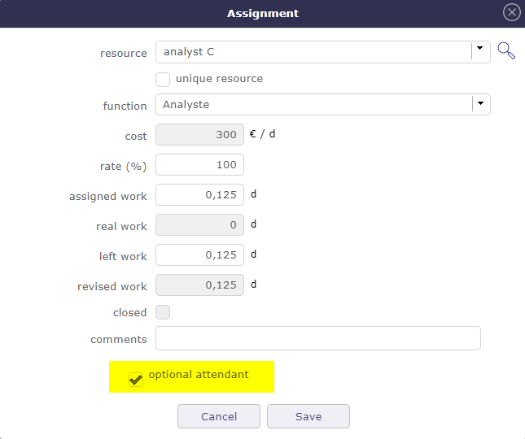

Meetings¶
Meeting screen¶
Meeting items are stored to keep track of important meetings during the project lifecycle :
Progress Meetings
Steering committees
Functional workshops
Keeping track of each meeting makes it possible to follow the decisions or the answers to questions that are taken during them.
This will provide an easy way to find back when, where and why a decision has been taken.
Each meeting is displayed in the agenda. listed in chronological order during the day.
If the manager is filled in, he is automatically added to the meeting assignments.
If one of the resources is assigned to another meeting on the same day, a non-blocking message is displayed if the times overlap.
Project task
Meeting is a planned task. they appear in the Gantt diagram and imputation sheets with the date fixed.
You can assign project resources (named attendees).
You have progress section that allows for followed resources work and cost.
Section Description
Field |
Description |
|---|---|
Unique Id for the meeting. |
|
Name |
Short description of the meeting. If not set, will automatically be set to meeting type completed with meeting date. |
|
Type of meeting. |
|
The project concerned by the meeting. |
|
The initial date of the meeting, including the start and end time. |
Location |
Place (room or else) when meeting will stand. |
Email invitation |
Send an email to the expected participant in the Attendees section |
Start Meeting button |
Allow to go on the live meeting screen. |
Agenda of the meeting |
Description of the meeting and agenda. |

Description can be used to store agenda.
Email invitation
Allows to send the email to attendees.
They will receive the invitation in their calendar management tool.
Treatment
Field |
Description |
|---|---|
Parent activity |
Parent activity of the meeting. In the WBS structure, under which the meeting will be displayed in the Gantt planning. |
|
Actual status of the meeting. |
Resource who is responsible for the organization of the meeting. Attention ! The responsible is not automatically assigned. |
|
Flag to indicate that meeting has been taken into account. |
|
Flag to indicate that meeting has been held. |
|
Flag to indicate that meeting is archived. |
|
Cancelled |
Flag to indicate that meeting is cancelled. |
Minutes of the meeting. |
Note
Minutes
You can enter here only a short summary of the minutes and attach the full minutes as a file.
Steering
Retrieving the agenda of a meeting from the description of its type
Diary
Viewing meetings in agenda, even if they are not planned
Live Meeting¶
LiveMeeting you can manage meetings in an Agile way.
Manage written production quickly and easily.
Recovery in the liveMeeting of the agenda established on the meeting screen.
Automatic saving of the minutes when leaving the live meeting.
Automatically share the time between all participants.
Dynamically measure the speaking time of each participant.
Easily write minutes while assistants speak.
Easily manage actions / decisions / questions while writing minutes.
Manage tickets, activities, actions and requirements with Kanban while writing minutes.
Saving the items entered in the live in the minutes section of the meeting.
Click on Start meeting button to access the Live Meeting Management screen.
The Live Meeting screen¶
Click on Hide time counters to show or hide participants’ tabs with their speaking time
Click on to start the meeting and to start decrementing the speaking time
Click on to stop the meeting and close the LiveMeeting window
Click on
 to exit the LiveMeeting screen
to exit the LiveMeeting screenClick on
 to save the live meeting report
to save the live meeting report
{kind=link}
{kind=link}
See: Live Meeting
Kanban Management
Click on to manage the kanbans
{kind=link}
Kanban management in the Live Meeting¶
You can manage your Kanban tiles directly in the Live Meeting interface.
See: KanBan
Periodic meetings¶
Periodic meeting is a way to define some meetings that will occur on a regular basis.

Periodic meeting screen¶
Warning
Most fields match between meeting and recurring meeting, but some information is not present for recurring meetings, such as minutes or status.
When recording a recurring meeting, each meeting is automatically created in a parent folder, the recurring meeting.
Display of unit meetings under the parent folder¶
When the parent folder is closed, the meeting lines are not visible, but they appear on the same line as the folder.
Display of single meetings on the parent folder bar¶
Changes can be made on each group meeting.
In most cases, these changes will not be affected or erased by periodic meeting updates.
Meetings created by recording a recurring meeting will also be displayed on the meetings screen.
Attendees section¶
This section allows to define the list of attendees to the meeting.
The list of participants is displayed with
The assignment rate
The time assigned and planned for this activity
The real time filled in by the resources
The remainder to be done.
If a resource has an entered entry date then they will be taken into account.
Resources prior to their entry date will not be displayed on meeting prior to this date.
So meeting works of these attendees are booked in the project.
Ability to assign to a meeting a resource or a contact or a user not member of the project team.
A special icon is placed on resource rows representing a pool of resources.
Attendees section¶
You can assigned a team to the pool of resource, one dynamic and the other static.
The switch button automatic assignment of the project team above the assignment table allows you to assign the current project team.
If a resource is added to the project then they will also be assigned to the meeting.
The assign whole project team button assigns the project team from time to time.
If a resource is assigned to the project later, it will not be added to the meeting assignment
Attendee list
Click on
 to delete the assignment of the resource
to delete the assignment of the resourceClick on
 to divide the assignement with another resource
to divide the assignement with another resourceClick on
 to go to the resource’s timesheet screen for the week the meeting was planned
to go to the resource’s timesheet screen for the week the meeting was plannedMandatory participant and Optional attendant option
The icon
 indicates that the presence of the participant is mandatory
indicates that the presence of the participant is mandatory Optional attendant¶
More detail about how assigned project resources, see: Assignment section section.
Other attendees
Extra list of persons attending (or expecting to attend) the meeting, in completion to resource in the attendee list.
You can enter attendees by email address, resource or contact name, user name or initial without caring about.
Just separate attendees with commas or semicolons.
Note
Duplicate email addresses in the attendee list will automatically be removed.
{kind=link}
{kind=link}
Change Request¶
The change request feature provides effective tracking of your customer’s change requests.
Its purpose is to describe a process that makes clear how the change is communicated, how decisions will be made and by whom and how the project will adapt accordingly.
A change request is very close to a requirement, it can also generate several requirements. The change request is necessarily linked to a project and can be linked to a product.
Section Description
Field |
Description |
|---|---|
ID |
Request ID number |
|
Fill in the title of the change. It must be understandable at first reading |
Change Request Type |
define the type of the request |
Project |
Link the change request to a project |
Product |
Link the change request to a product |
External reference |
Name of the external reference |
Contact |
Name oft the contact |
Origin |
Link to the item causing the change request |
Business Features |
Functionality trades whose modification request will need |
Urgency |
Determine the urgency of the request |
Initial due date |
Date you committed to the client |
Planned due date |
Deadline actually planned |
Description |
Describe the change request you want to initiate |
Justification |
Justify this change request. |
Expected benefit |
List the potential benefits that this change request will bring |
Section Treatment
Field |
Description |
|---|---|
Status |
Actual status of the decision |
Resource who is responsible for the follow-up of the question |
|
Criticality |
how critical is the demand |
Feasibility |
how feasibility is the demand |
Technical risk |
what are the technical risks |
Priority |
What is the priority of the request |
Estimate work |
Estimate work for the resquest |
Estimate cost |
Estimate cost for the request |
Target Version |
The target version affected by the request |
Flag to indicate that question has been taken into account |
|
Approved by |
Indicates the date the application was approved and by whom |
Flag to indicate that question has been answered |
|
Flag to indicate that decision is archived |
|
Cancelled |
Flag to indicate that decision is cancelled |
Result |
Enter the result of the implementation of the change request |
Efficiency Annalyse |
Complete the analysis of the effectiveness of the implementation of the change request |
Decisions¶
Decisions are stored to keep track of important decisions, when, where and why the decision was taken.
You can link a decision to a meeting to rapidly find the minutes where the decision is described.
Section Description
Field |
Description |
|---|---|
Unique Id for the decision. |
|
|
Short description of the decision. |
|
Type of decision. |
|
The project concerned by the decision. |
Complete description of the decision. |
Section Validation
Field |
Description |
|---|---|
|
Actual status of the decision. |
Decision date |
Date of the decision. |
Origin |
Origin of the decision. |
Resource accountable for the decision. |
|
Flag to indicate that decision is archived. |
|
Cancelled |
Flag to indicate that decision is cancelled. |
Questions¶
Question are stored to keep track of important questions and answers.
In fact, you should keep trace of every question and answer that have an impact to the project.
The questions can also afford an easy way to track questions sent and follow-up non-answered ones.
This will provide an easy way to find back when, who and precise description of the answer to a question.
Also keep in mind that some people will (consciously or not) be able to change their mind and uphold it has always been their opinion…
You can link a question to a meeting to rapidly find the minutes where the question was raised or answered.
Monitoring indicator
Possibility to define indicators to follow the respect of dates values.
- Respect of initial due date
- Respect of planned due date
Section Description
Field |
Description |
|---|---|
Unique Id for the question. |
|
|
Short description of the question. |
|
Type of question. |
|
The project concerned by the question. |
Complete description of the question. |
Section Answer
Field |
Description |
|---|---|
|
Actual status of the decision. |
Resource who is responsible for the follow-up of the question. |
|
Initial due date |
Initially expected date for the answer to the question. |
Planned due date |
Updated expected date for the answer to the question. |
Replier |
Name of the person who provided the answer. |
Flag to indicate that question has been taken into account. |
|
Flag to indicate that question has been answered. |
|
Flag to indicate that question is archived. |
|
Cancelled |
Flag to indicate that question is cancelled. |
Complete description of the answer to the question. |
Deliverables¶
This section allows to define the list of deliverables items.
This will provide an easy way to organize your due to customers.
In fact, you can keep track of every deliverables.
Deliverables links with Milestones.
Note
If you change the responsible of milestones, the responsible of deliverable will automatically changed, and vice versa.
Section Description
Field |
Description |
|---|---|
Unique Id for the KPI. |
|
|
name of the deliverable. |
IdDeliverableType |
id of the Deliverable Type. |
IdProject |
id of the Project. |
externalReference |
name of the external reference. |
Description |
Complete description of the deliverable. |
Note
You can estimated quality value for deliverable and this will produce a KPI.
See: KPI definitions
Section Validation
Field |
Validation |
|---|---|
Delivery status |
Actual status of the delivery. |
Deliverable |
Weight of the quality of the deliverable. |
Responsible |
to name |
due date |
as planned |
Box to indicate that delivery is archived. |
To follow life cycle management on deliverables (status managed as a workflow)
Incomings¶
This section allows to define the list of incomings items from customers.
It can be an indicator to follow if you can begin an action. For example, if you need an item from customer.
Incomings links with Milestones.
Note
If you change the responsible of milestones, the responsible of Incomings will automatically changed, and vice versa.
You can estimated quality value for incoming and this will produce a KPI. See: KPI definitions
Deliveries¶
Deliveries items are stored to keep track of deliveries.
Added list of deliverables integrated in delivery.
Note
Automatic dispatch of delivery status to deliverables.
Section Description
Field |
Description |
|---|---|
Unique Id for the delivery. |
|
|
Short description of the delivery. |
|
Type of deliverable. |
|
The project concerned by the delivery. |
ExternalReference |
name of the external reference. |
Description |
Description of the delivery. |
Section Validation
Field |
Description |
|---|---|
Delivery status |
Actual status of the delivery. |
Resource |
resource of the delivery. |
Planned date |
Expected date of delivery. |
Real date |
Effective delivery date. |
Validation date |
validate the delivery date. |
Flag to indicate that delivery is archived. |
To follow life cycle management on deliveries (status managed by a workflow)
Mails follow-up¶
Incoming and outgoing mail allows the dematerialization of mail to facilitate its distribution, allow archiving and monitoring by all employees
Incoming mails
Incoming mails screen¶
Field |
Description |
|---|---|
Unique Id for the context. |
|
|
Name of the mail |
|
Type of the mail* |
|
Name of the project to which the mail is attached |
Date of receipt |
Date of receipt of mail |
Receive mode |
How was the mail received* |
Responsible |
person handling mail |
Status |
Status of the mail |
Box checked indicates the mail is archived. |
|
Cancelled |
Box checked indicates the mail is cancelled. |
* customizable in value lists
Transmitter description
In this section it is possible to indicate which transmitter is.
If it is a contact known to your database, you can select it directly from the lists.
Approvers
You can define approvers for a mail.
On the incoming mail screen, the approver can approve or reject the maiml.
All approvers of the mail can view the response of other approvers.
Approval status
This status allows you to globally track the status of the approval.
It can be used in a filter, like all the other fields of the mail object.
calculated according to the approval status of the mail it may take the following values:
Without approval: if no approver has been added to the list of approvers
Rejected: if at least one approver rejected the mail
Pending approval: if there is at least one approver who has not approved the document and no one has yet rejected the mail
Approved: if all approvers approved the mail.
Outgoing mails
Outgoing mails screen¶
Field |
Description |
|---|---|
Unique Id for the context. |
|
|
Name of the mail |
|
Type of the mail* |
|
Name of the project to which the mail is attached |
Sent date |
Date of mailing |
Sent mode |
How was the mailing* |
Responsible |
person handling mail |
Status |
Status of the mail |
Box checked indicates the mail is archived. |
|
Cancelled |
Box checked indicates the mail is cancelled. |
* customizable in value lists
Transmitter description
In this section it is possible to indicate which transmitter is.
If it is a contact known to your database, you can select it directly from the lists.
Approvers
You can define approvers for a mail.
On the outgoing mail screen, the approver can approve or reject the mail.
All approvers of the mail can view the response of other approvers.
Approval status
This status allows you to globally track the status of the approval.
It can be used in a filter, like all the other fields of the mail object.
calculated according to the approval status of the mail it may take the following values:
Without approval: if no approver has been added to the list of approvers
Rejected: if at least one approver rejected the mail
Pending approval: if there is at least one approver who has not approved the document and no one has yet rejected the mail
Approved: if all approvers approved the mail.
Project Analysis¶
Projeqtor allows you to record assumptions, constraints and lessons learned.
This involves having several screens to enter this information which can be linked to the project like each element of ProjeQtOr.
These screens will allow you to establish a management plan for your projects, whatever they may be.